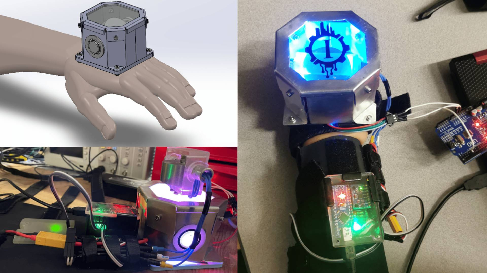
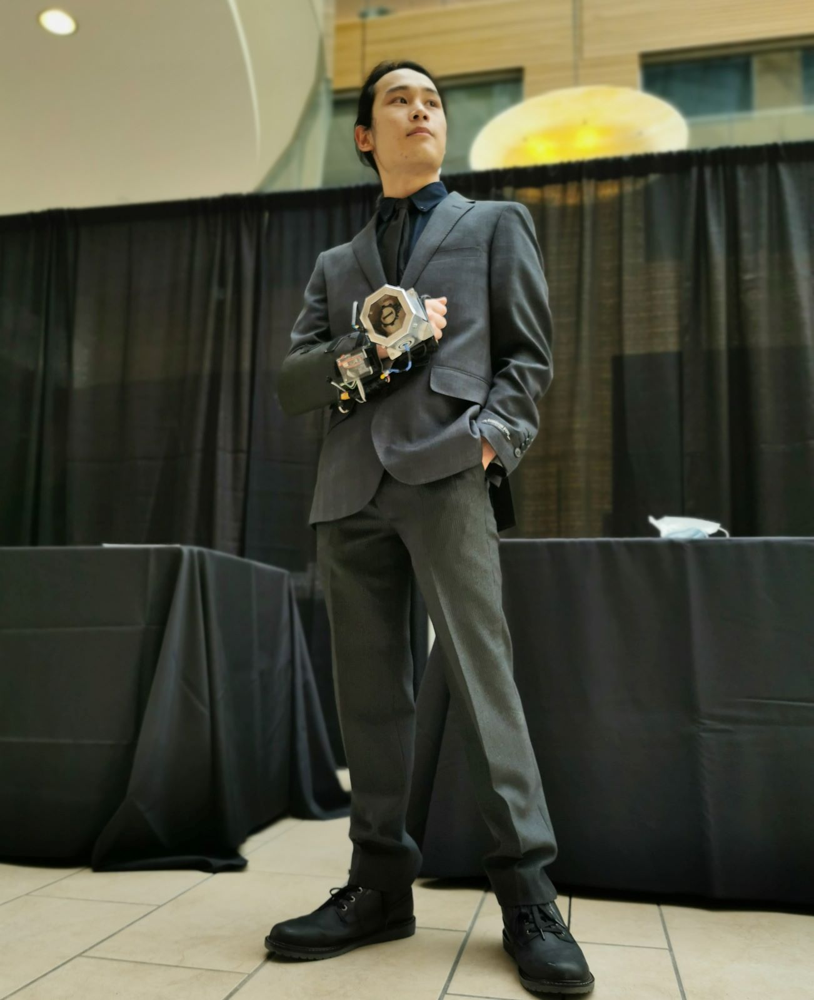
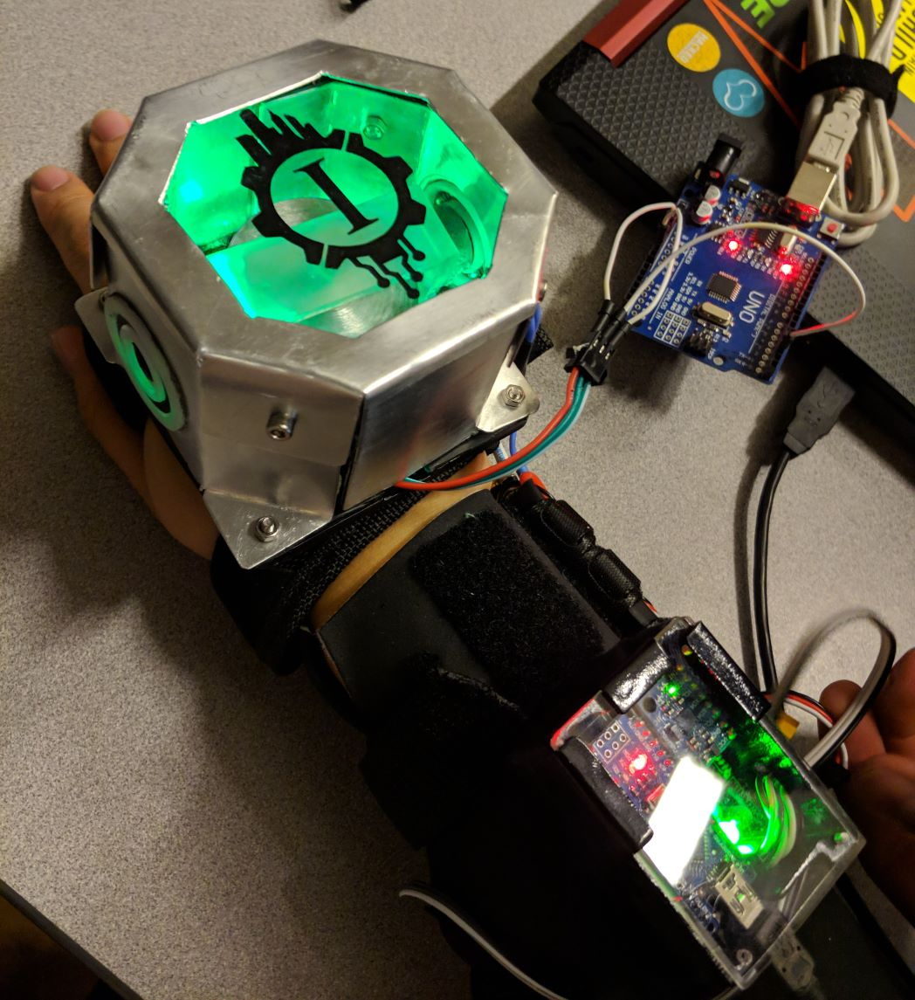
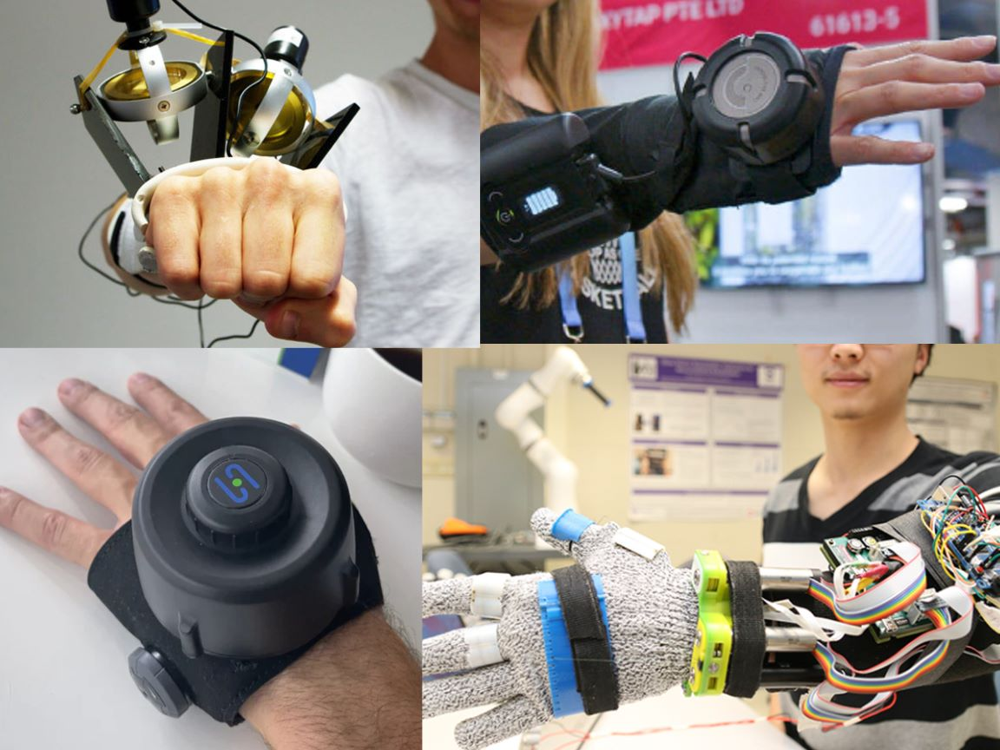
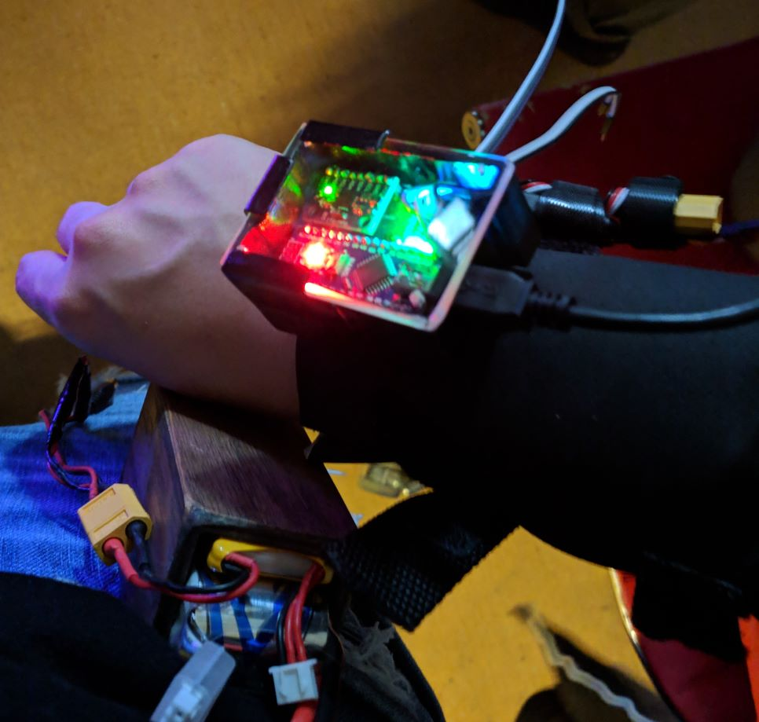
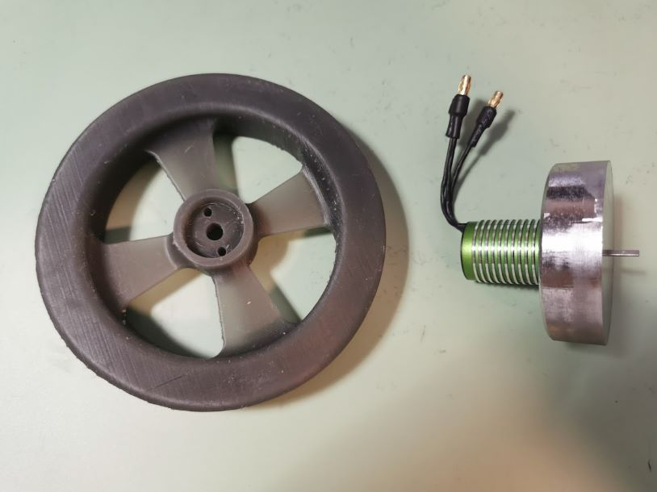
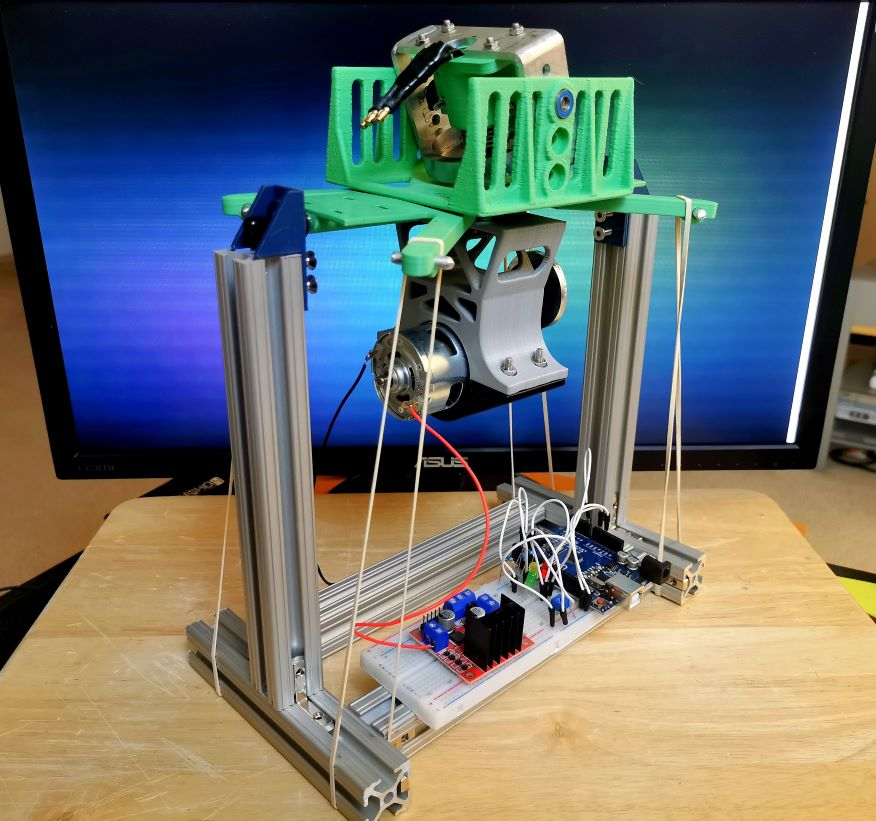
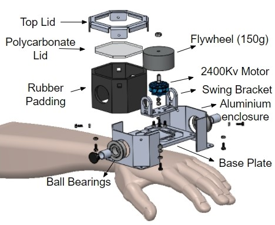
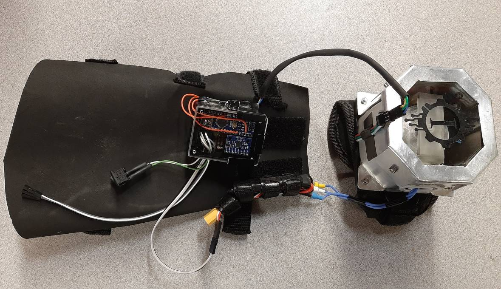
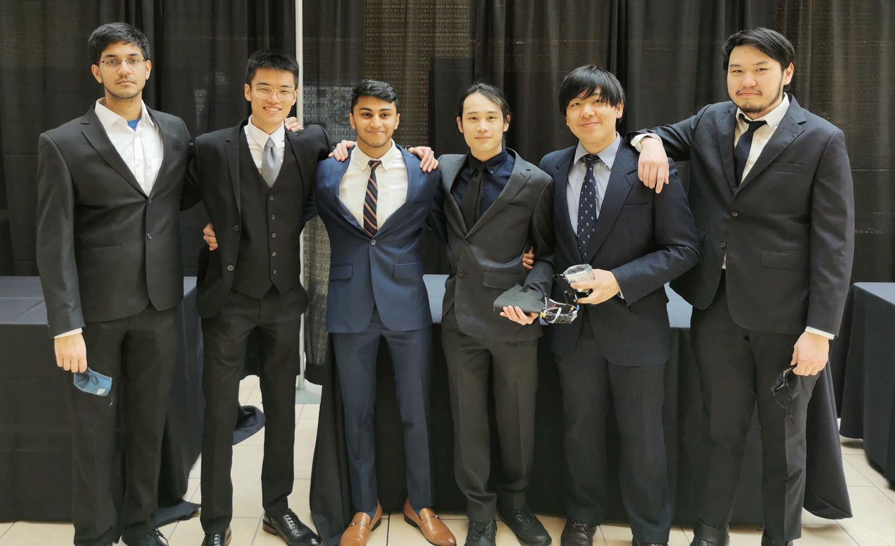

Taking on a biomedical project, my 2022 capstone was designing a glove to aid in mitigating essential tremor in the hands. This was spurred by one of my project teammates, who experiences minor tremors in their hands, which results in difficulty when performing common everyday tasks.
- I was the lead of the team, running meetings and design reviews, and guiding the integration between the mechanical, electrical, and software subteams.
- On the technical end, I helped design and fabricate a vibration-dampening enclosure to mount our flywheel motor, and did final integration of all product components.
- I also worked on the integration of electromyography (EMG, or myoware) sensors to detect the occurrence of tremor and muscular activity.
Our Final Design Report

- 150g steel flywheel was precisely manufactured using CNC and lathe to fit within space constraints
- Drone motor supplies 18,000 RPM @ 0.3Nm of torque for the flywheel, while minimizing footprint
- Electromyography sensor detects muscular activity from the forearm to determine voluntary user actions
- Aluminum + rubber sandwich panel enclosure protects from flywheel failure while reducing noise pollution
- Neoprene sleeve conforms snugly to the user’s forearm while also securing the EMG sensor, IMU, and PCB.


Ideation:
Our project began with market research, discovering that most wearable devices made use of small rotating weights to produce mitigation effects. This was due to rotating discs wanting to maintain their plane of gyration, resulting in a counteracting torque when displaced off its axis of rotation. However, the active correction made desirable movements feel “like mud”.

My team wanted to make use of electromyography (EMG) combined with machine learning to detect when the user was actually trembling, and discern it from conscious movement.
Electronics & Software:
The brains of the design was an Arduino Nano, which was soldered to a custom breakout board. Our custom board included an IMU in combination with the EMG sensor to detect user movements, a motor driver (ESC) to control the drone motor, and various LEDs to display initialization and error codes.
Our machine learning unfortunately didn’t have enough sample data to have high accuracy, however the software demonstrated combining IMU and EMG data to detect different movements. Given significantly more time to train the model, we believe we would be able to have a working algorithm within 93-95% accuracy.

Flywheel Design:
The flywheel underwent multiple iterations, making use of a spreadsheet calculator to determine the dimensions, moment of inertia, kinetic energy, and resulting torque. Initial prototypes were made from a dense resin, before moving onto being lathed from solid steel.
Due to gyroscopic precession, an additional bracket was necessary, allowing the flywheel to swing in the direction perpendicular to the plane of rotation and parallel to the axis of tremor.

Testing Jig:
Due to the dangerous nature of the project, we proposed the creation of a test stand which could simulate a tremoring effect. A 3D printed platform was mounted with a longitudinal axis of rotation, with the swinging bracket mounted perpendicular. A small motor with an eccentric weight was used to simulate tremoring. This would allow us to watch the stabilization plane from a safe distance, and determine if there was any notable mitigation being imparted by the rotation of the flywheel.

Enclosure Design:
With the flywheel complete, an enclosure was designed to compact the test stand onto the footprint of the hand. The initial goal of the housing was to protect the user from the flywheel in the case the motor shaft failed at high speeds, though additions were made for sound / vibration dampening and aesthetics.
The outer shell was patterned and formed from ⅛” aluminum sheet, with the walls made from a sandwich panel of aluminum + rubber + aluminum. In order to allow some aesthetics, the upper panel was made from a ⅛” sheet of polycarbonate, which allows viewing into the flywheel chamber, while still being impact resistant.

Wearable Sleeve:
Once all the components were finalized, a sleeve was cut from a neoprene sheet to provide a comfortable and snug fit. The sleeve was fabricated using a sewing machine and velcro straps for securement, before sewing on mountings for our PCB and EMG sensors.

Our team was successfully able to demonstrate a prototype of the glove, demonstrating the ability for a rotating mass to stabilize the minor shaking from essential tremor. We showcased the project at the UBC 2022 Design and Innovation Day event, allowing over 200 members of the general public to try our glove. Our project went on to win the top design award out of 13 capstone teams for an innovative design and creative product showcase.
In the spring of 2023, we also entered the glove in the 9th annual Simon Cox Student Design Competition, where university teams across British Columbia design devices to provide assistive living for those with disabilities. Here we represented UBC Vancouver, placing 3rd of 8 student teams.
Awards:
- IGEN Faculty Award (3rd Year) - 1st of 13 University student teams
- Don Danbrook Innovation Award - 3rd of 8 Universities
